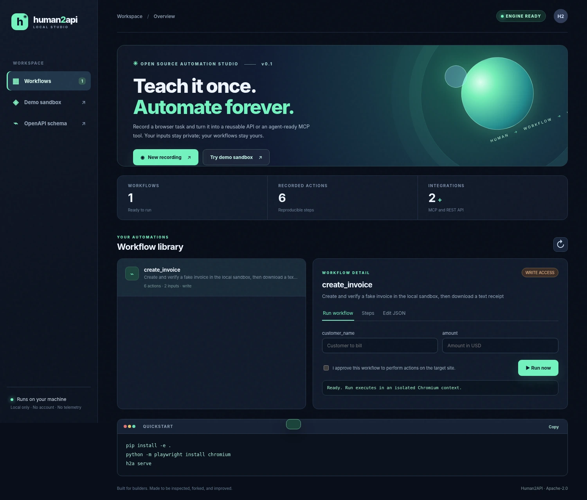

01
Teach the task
Capture browser clicks, desktop pointer actions, or teach an authorized Android phone through guided ADB commands.
Teach browser, desktop or Android workflows, then turn them into inspectable CLI, MCP and local REST tools. A practical, experimental developer preview — no locked-in cloud.

Unlike a black-box autonomous agent, every step is inspectable and repeatable.
Capture browser clicks, desktop pointer actions, or teach an authorized Android phone through guided ADB commands.
Edit straightforward JSON. Add assertions, extraction, downloads and selector fallbacks.
Call from your terminal, connect MCP-compatible agents, or use the local REST API.
We don't keep the workflow in a closed cloud. Save a portable JSON file, review every click, and share only what you want.
// Workflow action { "action": "fill", "selector": "#customer-name", "value": "{{customer_name}}" }
Recording discards typed input values. Operate on your own machine without an account or telemetry.
Write-capable workflows require approval, and allowed hosts are declared and checked.
CSS fallbacks plus optional semantic selector recovery. AI recovery needs explicit per-run consent.
Standard MCP and REST interfaces. Bring your favorite compatible agent instead of choosing ours.
Start in the browser with Python 3.10+. Desktop and Android engines are optional additions.
Full installation guide ↗# Clone and install git clone https://github.com/karemfree1282-gif/human2api.git cd human2api python -m pip install -e . python -m playwright install chromium # Launch the studio h2a serve
Star the project, report a bug, or contribute a feature. Every contribution makes the tools more useful for everyone.
Explore on GitHub ↗